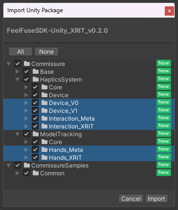

FeelFuseSDK マニュアル
1. FeelFuseSDKについて
FeelFuseSDKは、FeelFuseデバイスで触覚フィードバックを再生するアプリケーションを開発するためのUnityライブラリです
FeelFuseSDKが提供するコンポーネントをUnityプロジェクトのシーンに配置するだけで、触覚フィードバックを再生するアプリケーションを簡単に開発できます
コンポーネントは拡張可能であり、開発者が独自のカスタム触覚フィードバックを実装することができます
1.1 システム要件
FeelFuseSDKおよび関連ライブラリの検証済みバージョン
- Unity 2022.3.62f3 (Standalone Windows Platform / Android Platform)
- AudioStream v3.5
- OscCore v1.1.0
- Meta XR SDK v83.0.1
- XR Hands v1.4.3
- XR Interaction Toolkit v2.6.5
1.2 SDK パッケージ
現在、提供されているSDKパッケージ
- FeelFuseSDK + MetaXR Sample
- FeelFuseSDK + XRIT Sample
1.3 ハードウェア
現在、対応しているハードウェア
- FeelFuse (V0)
- FeelFuse (V1)
1.4 VR セットアップ
現在、サンプルが用意されているVR用セットアップ
- MetaXR Sample
- Meta XR SDK
- XRIT Sample
- XR Hands
- XR Interaction Toolkit
2. セットアップ
FeelFuseSDKを使用するには、使用するデバイスに応じて、提供されたUnityPackageをプロジェクトにインポートし、必要なコンポーネントをシーンに配置します
以下の手順でセットアップを行ってください
2.1 ハードウェア セットアップ
- FeelFuse V0
- デバイスをPCのUSB-Cポートに接続します
- オーディオデバイスとしてFEELTECH_L, FEELTECH_Rが認識されることを確認します
- サウンド設定の出力デバイスから確認できます
- 名前が異なる場合、出力デバイスの名前の変更からFEELTECH_L, FEELTECH_Rに変更してください
- デバイスマネージャーから2つのCOMポートが認識されていることを確認します
- 認識されていない場合、ドライバーを再インストールしてください
- FeelFuse V1
- デバイスの電源を入れます
- PCのWiFI接続から、対象のデバイスを選択します
- Default_ID:FTW_DEVICE
- Default_Pass:FTW_PSWD
- WiFIに接続できない場合
- 一部のWiFiとPCの組み合わせでは接続できないことがあります
- 別のWiFIドングル等をお試しください
- WiFiには接続できたが通信できない場合
- ネットワークのファイアウォールの設定をご確認ください
2.2 インポート
2.2.1 Unityプロジェクトを開く（Unity 2022.3.以降を推奨）
2.2.2 必要な外部の依存パッケージをインポート
- 使用するデバイスやVR用セットアップに応じて、必要な依存パッケージが変わります
- 依存パッケージをいれない場合は、代わりにSDKインポート時に対応するSDKフォルダを除外してください
- V0 Device
- 使用時：依存パッケージをインポート
- 不使用時：SDKインポート時に対象を除外
Assets/Commissure/HapticsSystem/Device_V0/
- V1 Device
- 使用時：依存パッケージをインポート
- 不使用時：SDKインポート時に対象を除外
Assets/Commissure/HapticsSystem/Device_V1/
- ※V0+V1 Device を 同時に使用する場合
- 依存パッケージをインポート
- AudioStream (有償)
- OscCoreはAudioStreamに含まれているため、個別のインポートは不要です
- 依存パッケージをインポート
- MetaXR Sample
- 使用時：依存パッケージをインポート
Meta XR Core SDK: com.meta.xr.sdk.core
Meta XR Interaction SDK: com.meta.xr.sdk.interaction.ovr
Meta XR Interaction SDK Essentials: com.meta.xr.sdk.interaction
もしくは、
- 不使用時：SDKインポート時に対象を除外
Assets/Commissure/ModelTracking/Hands_Meta/Assets/Commissure/HapticsSystem/Interaction_Meta/Assets/CommissureSamples/Meta/
- 使用時：依存パッケージをインポート
- XRIT Sample
- 使用時：依存パッケージをインポート
- XR Hands: com.unity.xr.hands
- Samples: HandVisualizer
- XR Interaction Toolkit: com.unity.xr.interaction.toolkit
- XR Hands: com.unity.xr.hands
- 不使用時：SDKインポート時に対象を除外
Assets/Commissure/ModelTracking/Hands_XRIT/Assets/Commissure/HapticsSystem/Interaction_XRIT/Assets/CommissureSamples/XRIT/
- 使用時：依存パッケージをインポート
2.2.3 FeelFuseSDKのUnityPackageファイル（.unitypackage）をプロジェクトにインポート
メニューから
Assets > Import Package > Custom Package...を選択UnityPackageファイルを選択し、
Importボタンをクリック不必要なSDKモジュールに関して、依存パッケージがないとエラーが発生してしまうため、対応するSDKフォルダを除外してください
Sampleが不要な場合は、
Assets/CommissureSamples/をインポート時に除外するか、あるいは削除してください
以下のフォルダにSDKのファイルが配置されます
Assets/Commissure/: SDK本体のファイルAssets/CommissureSamples/: Sampleのファイル
2.3 サンプル (WIP)
SDKにはサンプルシーンが含まれており、触覚フィードバックの動作を確認できます
フォルダのパスはMetaXR、XRITで以下です
MetaXR：Assets/CommissureSamples/Meta/SmapleScene/SampleSceneForMeta.unity
XRIT：Assets/CommissureSamples/XRIT/SampleScene/SampleSceneforXRIT.unity
※HapticDeviceV0オブジェクトのLeft/Right Hand Device NameとLeft/Right Com Portの欄が2.1で設定したものになっている確認してください
タッチパネルで以下の５つのサンプルを出し入れすることが可能です
- Slider: 中心に戻るばねのような力（復元力）を提示するサンプル
- 中心のノブをつかんで左右に動かし、反発力を確認できます
- ErrorFeedBack: 対象物へ右手を誘導する吸引力を提示するサンプル
- 案内に従ってボタンを押したり、ひもを引っ張ったりすることで、特定の部位へ導かれる感覚を体験できます
- SlingShot: スリングショットを引く際の張力を提示するサンプル
- 片方の手で本体を持ち、もう片方の手で弾を引いて発射する際の抵抗感を再現しています
- BallInBox: 箱の中でボールが転がる際の慣性や衝撃を提示するサンプル
- ボールが入った箱を振り、中身が壁面に当たる感触や転がる振動を確認できます
- SqueezeBall: 柔らかいボールを握りつぶす際の弾性を提示するサンプル
- ボールを手に持ち、握り込む深さに応じた反発力の変化を体験できます
2.4 最小限のシーンセットアップ
独自のシーンで触覚フィードバックを実装する場合、以下の最小限のセットアップが必要です
各種スクリプトの概要についてはSummaryをご確認ください
必須コンポーネント
- HapticManager: 触覚システム全体を管理するマネージャー
- 空のGameObjectを作成し、
HapticManagerコンポーネントをアタッチ
- 空のGameObjectを作成し、
- HapticDevice(Prefab): 触覚デバイスとの通信を担当
- デバイスのバージョン（V0, V1）に応じた適切なPrefabを選択してシーンに配置
- V0: Assets/Commissure/Device_V0/Prefabs/HapticDeviceV0
- V1: Assets/Commissure/Device_V1/Prefabs/HapticDeviceV1
- デバイスのPrefabはHapticOutputスクリプトを含んでいます
- HapticOutputを個別に配置する必要はありません
- デバイスのバージョン（V0, V1）に応じた適切なPrefabを選択してシーンに配置
- HapticInput: Hapticsのデータを入力（検出）するセンサを表します
- デフォルトでは、Force（力覚）とAudio（振動）データに対応しています
- HapticInputを個別に登録/解除することも可能ですが、一括で管理するためのスクリプトとして、HapticHandsが提供されています
- HapticSource: Hapticsのデータの発生源を表します
- デフォルトでは、Force（力覚）とAudio（振動）データに対応しています
推奨/選択 コンポーネント
- HapticHands: HapticInputを、ハンドトラッキングと結び付けて動作させるためのスクリプトです
- Listに指定された部位のHapticInputを一括で生成し、対応するハンドトラッキング部位に追従するようにします
- HapticHandsAttacher: 任意のオブジェクトを、指定された部位に追従させるために使用できます
Hapticsのデータを取り扱うためにはHapticInputとHapticSourceを配置したうえで、これらを適切に接続する必要があります HapticInputとHapticSourceを接続するためにRegistererが用いられます
- HapticXXXRegisterer: HapticInputやHapticSourceを接続するためのスクリプト
- どのような契機によって接続するのか、それぞれの契機に対してスクリプトを用意します
- デフォルトでは以下の三つの契機に対するスクリプトが提供されています
- HapticTriggerXXXRegisterer: コライダーの接触によってInputとSourceを接続します
- それぞれのInputやSourceに対して、対応するコライダーを登録する必要があります
- InputとSourceに登録されたコライダーが接触したときに、InputとSourceが接続されます
- HapticSequentialXXXRegister: あらかじめ定められた順序、組み合わせでInputとSourceを接続します
- あらかじめInputとSourceの組み合わせを登録します
- 特定の関数を呼び出すことで、登録された組み合わせを順次切り替えることができます
- HapticInteractionXXXRegisterer:XRでのGrabイベント等によってInputとSourceを接続します
- 使用する外部ライブラリに応じて、GrabイベントのSender等を登録する必要があります
- デフォルトではMeta用とXRIT用が提供されています
- HapticTriggerXXXRegisterer: コライダーの接触によってInputとSourceを接続します
使用する外部のライブラリに合わせて選択する必要があるものがあります
- HandTrackingModels: 各種のハンドトラッキングを画一的に扱うためのスクリプト
ハンドトラッキングのボーンのトランスフォームを登録する必要があります
使用するハンドトラッキングの種類に応じて、HapticHandsにトラッキングを登録するためのスクリプトが提供されています
現在、自動登録に対応しているハンドトラッキングは以下の通りです
- Meta SDK:
MetaHandTrackingModelsを使用- ハンドトラッキングのモデルがあらかじめシーンに存在しない場合、Play後に動的に登録する必要があり、MetaHandTrackingModelsを使用することで再生時に自動で登録を行います
- XR Interaction Toolkit:
HandTrackingModels,XRITSkeletonInjectorを使用- XRITSkeletonInjectorを使用して、HandTrackingModelsにボーンを割り当てることができます
- Meta SDK: